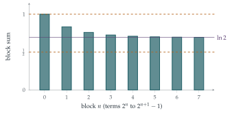

The numbers \(f(r)\) satisfy \(f(r) > f(r+1)\) for \(r = 1, 2, \ldots\). Show that, for any non-negative integer \(n\), \[k^n(k-1)\, f(k^{n+1}) \leq \sum_{r=k^n}^{k^{n+1}-1} f(r) \leq k^n(k-1)\, f(k^n),\] where \(k\) is an integer greater than \(1\).
By taking \(f(r) = 1/r\), show that \[\frac{N+1}{2} \leq \sum_{r=1}^{2^{N+1}-1} \frac1r \leq N+1.\] Deduce that the sum \(\sum\limits_{r=1}^{\infty} \frac1r\) does not converge.
By taking \(f(r) = 1/r^3\), show that \[\sum_{r=1}^{\infty} \frac{1}{r^3} \leq 1\tfrac13.\]
Let \(S(n)\) be the set of positive integers less than \(n\) which do not have a \(2\) in their decimal representation and let \(\sigma(n)\) be the sum of the reciprocals of the numbers in \(S(n)\), so for example \(\sigma(5) = 1 + \frac13 + \frac14\). Show that \(S(1000)\) contains \(9^3 - 1\) distinct numbers.
Show that \(\sigma(n) < 80\) for all \(n\).
The hook
The harmonic series \(1 + \frac12 + \frac13 + \frac14 + \cdots\) is the most famous example of a sum whose terms shrink to zero but which nevertheless grows without limit. It grows absurdly slowly: you need more than \(12{,}000\) terms to pass \(10\), and about \(1.5 \times 10^{43}\) terms to pass \(100\). But it does pass every number eventually.
Now throw away every term whose denominator contains the digit \(2\): out go \(\frac12\), \(\frac1{12}\), \(\frac1{20}\) to \(\frac1{29}\), \(\frac1{32}\), and so on. You might expect that removing a tenth or so of the terms would make little difference to a sum that is infinite anyway. Instead, what is left adds up to less than \(80\). This surprising fact was proved by A. J. Kempner in 1914, and the question walks you to it with one beautifully simple idea: chop the sum into blocks.
Before you start
The first inequality is about the block of terms from \(r = k^n\) to \(r = k^{n+1} - 1\). With \(k = 2\) and \(n = 3\), which terms are these, and how many of them are there?
They are \(f(8), f(9), \ldots, f(15)\): eight terms. In general the block runs from \(k^n\) to \(k^{n+1} - 1\), so it has \(k^{n+1} - k^n = k^n(k-1)\) terms. The inequality says the block sum lies between (number of terms) \(\times\) (smallest possible term) and (number of terms) \(\times\) (largest term).
Working it through
Stage 1 Bounding a block
Since \(f\) is decreasing, every term in the block satisfies \[f(k^{n+1}) < f(k^{n+1} - 1) \leq f(r) \leq f(k^n) \qquad (k^n \leq r \leq k^{n+1} - 1).\] Adding up the \(k^n(k-1)\) terms gives the inequality.■
Stage 2 The harmonic series
With \(k = 2\) and \(f(r) = 1/r\), what are the two bounds for the block from \(2^n\) to \(2^{n+1} - 1\)?
The lower bound is \(2^n \cdot \frac{1}{2^{n+1}} = \frac12\) and the upper bound is \(2^n \cdot \frac{1}{2^n} = 1\). So every block, however far out, contributes between \(\frac12\) and \(1\) (Figure 2.3.1). The blocks for \(n = 0, 1, \ldots, N\) fit together exactly to make the sum from \(r = 1\) to \(r = 2^{N+1} - 1\), so adding \(N + 1\) blocks gives \[\frac{N+1}{2} \leq \sum_{r=1}^{2^{N+1}-1} \frac1r \leq N + 1.\] As \(N \to \infty\) the left-hand side grows without bound, so the partial sums are unbounded and the series diverges.■

Stage 3 The sum of reciprocal cubes
Now take \(f(r) = 1/r^3\), still with \(k = 2\). The upper bound for block \(n\) is \[2^n \cdot \frac{1}{(2^n)^3} = \frac{1}{4^n}.\] The blocks for \(n = 0, 1, 2, \ldots\) cover every positive integer exactly once, so \[\sum_{r=1}^{\infty} \frac{1}{r^3} \leq \sum_{n=0}^{\infty} \frac{1}{4^n} = \frac{1}{1 - \frac14} = \frac43 = 1\tfrac13. \qed\] (Strictly, this shows every partial sum is at most \(\frac43\); an increasing sequence that is bounded above converges, so the infinite sum exists and is at most \(\frac43\). The true value is \(1.2020\ldots\))
Stage 4 Counting numbers without a 2
How many whole numbers from \(0\) to \(999\) can you write using only the digits \(0, 1, 3, 4, 5, 6, 7, 8, 9\), if you allow leading zeros (so \(7\) is written \(007\))?
Each of the three digit positions has \(9\) choices, so there are \(9^3\) such strings. They correspond exactly to the numbers from \(0\) to \(999\) with no \(2\), and removing \(0\) (which is not positive) leaves \(9^3 - 1 = 728\) numbers in \(S(1000)\).■
Stage 5 Kempner’s series
The block idea now works with blocks defined by the number of digits, which is the same as using \(k = 10\).
How many \(d\)-digit numbers have no \(2\) in them? And what is the smallest a \(d\)-digit number can be?
The first digit can be any of \(1, 3, 4, \ldots, 9\) (eight choices: not \(0\), not \(2\)), and each of the remaining \(d - 1\) digits has nine choices. So there are \(8 \times 9^{d-1}\) such numbers, and each one is at least \(10^{d-1}\). So the \(d\)-digit numbers in \(S(n)\) contribute at most \[8 \times 9^{d-1} \times \frac{1}{10^{d-1}} = 8 \left( \frac{9}{10} \right)^{d-1}\] to \(\sigma(n)\). Adding over all digit lengths \(d = 1, 2, 3, \ldots\), \[\sigma(n) \leq \sum_{d=1}^{\infty} 8 \left( \frac{9}{10} \right)^{d-1} = \frac{8}{1 - \frac{9}{10}} = 80.\] For the strict inequality, notice that most of the bounds are far from sharp (for instance \(\frac13 < 1\), while we have bounded every one-digit term by \(1\)), so \(\sigma(n) < 80\) for all \(n\).■
Looking back
Group the terms. Neither sum is easy term by term. Grouped into blocks of the right size, each was compared with a geometric series.
The right blocks depend on the problem. Powers of \(2\) suited \(1/r\) and \(1/r^3\); powers of \(10\) suited a question about decimal digits.
Bounded and increasing. Both convergence proofs rested on the same principle as Section 2.2: partial sums of positive terms increase, so a bound is all you need.
What’s really going on
The first inequality in the question is the heart of Cauchy’s condensation test: if \(f\) is positive and decreasing, then \[\sum_{r=1}^{\infty} f(r) \text{ converges} \iff \sum_{n=0}^{\infty} 2^n f(2^n) \text{ converges.}\] It turns hard series into easy ones. Applied to \(f(r) = 1/r^p\), it gives \(\sum 2^n \cdot 2^{-np} = \sum (2^{1-p})^n\), a geometric series that converges exactly when \(p > 1\). Applied to \(1/(r \ln r)\) it shows that even this diverges, and to \(1/(r (\ln r)^2)\) that this converges. The argument goes back to Nicole Oresme, who proved the harmonic series diverges in about 1350 by exactly the blocks of Figure 2.3.1.
How slowly the harmonic series diverges
Figure 2.3.1 suggests that each block contributes about \(\ln 2\), so the sum of the first \(N\) terms should be roughly \(\log_2 N \times \ln 2 = \ln N\). In fact \[1 + \frac12 + \cdots + \frac1N = \ln N + \gamma + \text{(something tending to $0$)},\] where \(\gamma = 0.5772\ldots\) is the Euler–Mascheroni constant. Nobody knows whether \(\gamma\) is rational. You will prove the formula with integrals in first-year analysis, and the harmonic numbers turn up again in Section 9.11 and in Section 11.12.
Most numbers contain a 2
Why does Kempner’s series converge? Because “numbers without a 2” are very rare among large numbers: of the numbers below \(10^d\), the proportion with no \(2\) is at most \((0.9)^d\), which tends to \(0\). Among \(100\)-digit numbers, fewer than \(0.003\%\) avoid the digit \(2\). So we are not removing a tenth of the terms, but almost all of them. Our bound of \(80\) is generous: in 1979 Robert Baillie used an accelerated method to compute the sum to many decimal places, and it is about \(19.257\).
Sums of reciprocal powers
The sum in part (ii) is \(\zeta(3)\), a value of the Riemann zeta function we met in Section 1.2. In Section 2.4 we will find \(\zeta(2) = \pi^2/6\) exactly, and Euler found a formula for \(\zeta(4), \zeta(6), \ldots\). But nobody has found a formula for \(\zeta(3)\). In 1978 Roger Apéry stunned the mathematical world by proving that \(\zeta(3)\) is irrational, using integrals not unlike the ones in Section 2.9. Whether \(\zeta(5)\) is irrational is still unknown.
The thinking skill
To decide whether a series of positive terms converges, group the terms into blocks on which they are roughly constant, and compare each block with a simple series.
Comparison tests are the bread and butter of first-year analysis. The skill is choosing the comparison: here, blocks of size \(2^n\) or \(10^d\) in which the terms change by at most a fixed factor.
Try this next
Feel the slowness. Using \(\sum_{r \leq N} 1/r \approx \ln N + 0.5772\), estimate how many terms of the harmonic series you need to pass \(10\), and to pass \(100\).
The test in action. Use the method of part (i) with \(f(r) = 1/r^2\) to show that \(\sum 1/r^2 \leq 2\). Then improve the bound by treating the first term separately.
Between convergence and divergence. Use the block inequality with \(k = 2\) to show that \(\sum_{r \geq 2} \dfrac{1}{r \ln r}\) diverges and \(\sum_{r \geq 2} \dfrac{1}{r (\ln r)^2}\) converges.
Excluding more. harder Show that the sum of the reciprocals of the positive integers with no \(2\) and no \(7\) in their decimal representation is less than \(35\). (Can you see where \(35\) comes from?)
Further reading
Julian Havil, Gamma: Exploring Euler’s Constant (Princeton University Press). The harmonic series, \(\gamma\) and much more, written for a strong school student.
Mary Hart, Guide to Analysis (Palgrave). A concise first-year text with a clear chapter on series and comparison tests.
Robert Baillie, “Sums of reciprocals of integers missing a given digit”, American Mathematical Monthly 86 (1979). A short paper you can read with this section behind you.